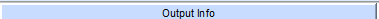

#Verify video output resolution from encoding properties page
#This routine assume the program you want is already selected.
#inputs: resolution=[] all the valid video output resolution: 720x576i25, 720x480i29.97, 1280x720p50, 1280x720p59.94, 1920x1080i29.97
#Usage: verify_video_aspect_ratio.sikuli aspectRatio=[4:3, 16:9, Auto-Passthrough]
###############################################################
#common code for every sikuli code. Do not remove this section
from me7klib import *
###############################################################
#YOUR code start here
###############################################################
#This is your check for the inputs that you are expecting.
def Check_args():
#checking for required arguments
Check_arg('aspectRatio')
Check_args()
############################################################
#Main program definitions code start from this point
#Any global variables here
Settings.OcrTextSearch=True
Settings.OcrTextRead=True
videoPropertiesTitle = 'Configure Video Encoding Properties'
#Any definitions are here
def Open_VideoProperties():
find()
doubleClick(Pattern().similar(0.90).targetOffset(-4,20))
wait()
def Cancel_VideoProperties():
find( )
click(Pattern().similar(0.80).targetOffset(27,1))
waitVanish(Pattern().similar(0.80).targetOffset(27,1))
def Verify_AspectRatio():
myar = Get_arg('aspectRatio')
find()
mytext = find(Pattern(
)
click(Pattern().similar(0.80).targetOffset(27,1))
waitVanish(Pattern().similar(0.80).targetOffset(27,1))
def Verify_AspectRatio():
myar = Get_arg('aspectRatio')
find()
mytext = find(Pattern( ).exact()).right(95).text()
mytext = mytext.replace('v','')
Cancel_VideoProperties()
if myar == mytext:
Print_debug('Video aspect ratio check verfied: ' + mytext)
else:
Exit_program('Video aspect ratio check failed. Expected = ' + myar + ' but received ' + mytext, 1)
#######################################################
#Main program flow
Open_VideoProperties()
Verify_AspectRatio()
).exact()).right(95).text()
mytext = mytext.replace('v','')
Cancel_VideoProperties()
if myar == mytext:
Print_debug('Video aspect ratio check verfied: ' + mytext)
else:
Exit_program('Video aspect ratio check failed. Expected = ' + myar + ' but received ' + mytext, 1)
#######################################################
#Main program flow
Open_VideoProperties()
Verify_AspectRatio()